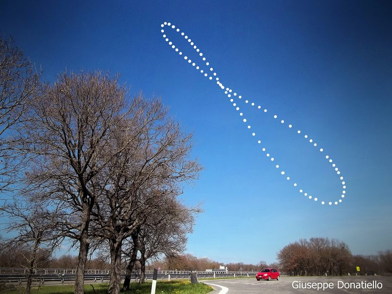

The clock of page 1.3 puts noon at 12:00 every day, but the real Sun crossed the meridian up to 14 minutes later than that in February and 16½ minutes earlier in November. Page 2.1 found one of the causes, the Sun's uneven motion along the ecliptic, and named the other, the tilt of the ecliptic to the equator.
Putting the two together gives the equation of time, the correction that makes a sundial agree with a clock. With the eccentric of page 2.1 and the obliquity of page 1.2, and nothing else, it comes out right to within a few seconds.
1 · ObservationThe sundial and the clock
A sundial shows apparent solar time, the hour angle of the real Sun, and reads 12:00 when the Sun crosses the meridian. A clock shows mean solar time, the hour angle of the mean Sun of page 1.3. We call the difference, sundial minus clock, the equation of time $E$. It is positive when the sundial is ahead.
At Greenwich, where the clock keeps Universal Time, the sundial is furthest behind the clock in mid-February and furthest ahead in early November, with two smaller swings in between, in May and July, and the two agree on only four days of the year.
A single day hardly shows the difference, since the true solar day, from one real noon to the next, is never more than half a minute longer or shorter than 24 hours. But the short days come in long runs, 100 of them in a row in 2026, and over a run their shortfalls add up, as Figure 1 shows.
(a) the true solar day
(b) the sundial minus the clock
In the figure
- dotted
- the four days of exactly 24 hours
From mid-February to early November the days fall short of 24 hours by about half an hour in all, which is exactly what the sundial gains on the clock over those months. The equation of time is the running sum of the days' differences from 24 hours. Over a whole year the differences cancel, because the clock is defined as the Sun's average.
Ptolemy makes the same observation: the difference between a true and a mean solar day does not cause "a perceptible difference" for a single day, "but the accumulated difference over a number of solar days is quite noticeable" (Almagest III 9).
A camera can record the equation of time as well. Photographed at the same clock time on days spread over a year, the Sun traces a figure eight called the analemma. Its height is the Sun's declination, and its spread from side to side is the equation of time.

.jpg){kind=link}
2 · ModelTwo causes of the uneven solar day
The equation of time
The mean Sun of page 1.3 is an imaginary point that moves along the celestial equator at a constant rate, with its right ascension always equal to the Sun's mean longitude, $\alpha_m = \bar\lambda$. Because it moves uniformly along the equator, its hour angle grows by exactly 15° an hour, which is what a clock needs.
Both kinds of time are hour angles, $H = \theta - \alpha$, so at any moment their difference is the difference of the two right ascensions. In degrees,
$$E = H - H_m = \alpha_m - \alpha = \bar\lambda - \alpha,$$and in time 1° is 4 minutes, since the sky turns 360° in 24 hours. We want to split this difference into the effect of the Sun's uneven speed, which page 2.1 modelled, and the effect of the tilt. Adding and subtracting the true longitude $\lambda$ does it:
Ptolemy names the same two causes: the extra stretch of the equator that crosses the meridian each day "cannot be a constant, for two reasons: firstly, because of the sun's apparent anomaly; and secondly, because equal sections of the ecliptic do not cross either the horizon or the meridian in equal times" (Almagest III 9).
The eccentricity part
The first part is page 2.1's equation of centre with its sign changed. While the Sun runs ahead of its mean place, $q > 0$, its right ascension grows ahead of the mean Sun's, it reaches the meridian later, and the sundial falls behind. To first order $-q \approx e\sin M$ in radians, so this part swings by about 1.9° either way, or 7.7 minutes of time.
The obliquity part
The second part would remain even for a Sun moving uniformly along the ecliptic. Its right ascension follows from the conversion formula $\tan\alpha = \cos\varepsilon\tan\lambda$ of page 1.2, whose table showed $\alpha$ lagging behind $\lambda$ in the first quadrant. To see how the lag depends on $\lambda$, we write the tangent of the difference:
$$\tan(\lambda - \alpha) = \frac{\tan\lambda - \tan\alpha}{1 + \tan\lambda\tan\alpha} = \frac{(1 - \cos\varepsilon)\sin\lambda\cos\lambda}{\cos^2\lambda + \cos\varepsilon\sin^2\lambda}.$$With $\sin\lambda\cos\lambda = \tfrac12\sin 2\lambda$, $\cos^2\lambda = \tfrac12(1 + \cos 2\lambda)$ and $\sin^2\lambda = \tfrac12(1 - \cos 2\lambda)$, and dividing above and below by $\tfrac12(1 + \cos\varepsilon)$,
The right-hand side has the same form as page 2.1's equation of centre, $\tan q = -e\sin M / (1 + e\cos M)$, with $e_\varepsilon$ in place of $e$ and $2\lambda$ in place of $M$, so the results of page 2.1 apply to the lag without new work. For today's obliquity $e_\varepsilon = 0.0430$.
To first order $\lambda - \alpha \approx e_\varepsilon \sin 2\lambda$ in radians. Its greatest value is exactly $\arcsin e_\varepsilon$, about 2.47° or 9.9 minutes of time, reached at $\lambda \approx 46^\circ$ and at the same distance from every other equinox and solstice.
The lag comes from a difference of speed between $\alpha$ and $\lambda$. Differentiating $\tan\alpha = \cos\varepsilon\tan\lambda$ gives
$$\frac{d\alpha}{\cos^2\alpha} = \cos\varepsilon\,\frac{d\lambda}{\cos^2\lambda}, \qquad \frac{d\alpha}{d\lambda} = \cos\varepsilon\,\frac{\cos^2\alpha}{\cos^2\lambda}.$$For a point of the ecliptic the conversion formulas of page 1.2 give $\cos\delta\cos\alpha = \cos\lambda$, so the ratio of the two squared cosines is $1/\cos^2\delta$, and
At the equinoxes $\delta = 0$ and the ratio is $\cos\varepsilon$: the ecliptic crosses the equator at a slant, only part of the Sun's motion is eastward, and $\alpha$ grows about 8% more slowly than $\lambda$. At the solstices $\delta = \varepsilon$ and the ratio is $1/\cos\varepsilon$: the ecliptic runs parallel to the equator, all the motion is eastward, and it happens at a declination of 23.4°, where the hour circles are closer together, so $\alpha$ grows about 9% faster.
So $\alpha$ falls behind $\lambda$ after each equinox and catches up before each solstice. The lag is greatest where the two speeds are equal, $d\alpha/d\lambda = 1$ (Exercise 3). Figure 2 starts with $\varepsilon = 45^\circ$, nearly twice the real tilt, so that the arc can be seen on the sphere.
(a) the uniform Sun and the mean Sun
(b) the lag through the year
In panel (a)
- blue circle
- the celestial equator
- gold circle
- the ecliptic, along which the Sun (gold dot) moves uniformly
- dashed
- the Sun's hour circle, which meets the equator at the Sun's right ascension α
- blue dot
- the mean Sun, at right ascension λ, as far from γ along the equator as the Sun is along the ecliptic
In panel (b)
- dashed
- the first-order approximation, $e_\varepsilon \sin 2\lambda$
The sum
Adding the two parts, to first order in $e$ and $e_\varepsilon$ and in radians, gives:
$$E \approx e\sin M + e_\varepsilon \sin 2\bar\lambda,$$a yearly wave of 7.7 minutes plus a half-yearly wave of 9.9 minutes. In 2026 this approximation is within a minute of the exact sum. Figure 3 shows the two parts and how they add.
In the figure
- green
- the eccentricity part, $-q$, from the eccentric of page 2.1
- blue
- the obliquity part, $\lambda - \alpha$
- red
- their sum, the equation of time $E$
The half-yearly wave is the larger, so $E$ has two maxima and two minima. The yearly wave makes them unequal: it deepens the February minimum and the November maximum, where it has the same sign as the half-yearly wave, and it reduces the other two. The four zeros of $E$ fall where the two waves cancel.
The analemma
At mean noon the mean Sun is on the meridian, $H_m = 0$, so the real Sun's hour angle is $H = E$, which in degrees is $E$ divided by 4 minutes. Plotted against the Sun's declination through a year, this hour angle traces the analemma of the photograph, as it would look at noon, upright.
In the figure
- faint dashed
- both causes, for comparison with one cause alone
- dotted
- the meridian, where a sundial reads noon
- scales
- the hour angle is drawn about four times larger than the declination
The analemma crosses itself at a declination of about 9°, where the Sun stands in mid-April and again in late August with the same equation of time.
3 · FitEccentricity, apogee and obliquity from the equation of time
The model has no parameter of its own, since $e$ and $\lambda_A$ come from the seasons (page 2.1) and $\varepsilon$ from the noon Sun at the solstices (page 1.2). But the argument can be turned round. A clock and a sundial, compared through one year, measure $E$, and since $E$ carries the same three parameters, it should give them back.
In the first-order formula, expanding $e\sin M$ with $M = \bar\lambda - \lambda_A$ splits the yearly wave into a sine and a cosine of the mean longitude:
Over a whole year the functions $\sin\bar\lambda$, $\cos\bar\lambda$, $\sin 2\bar\lambda$ and $\cos 2\bar\lambda$ are orthogonal, so each coefficient is an average, for instance $e\cos\lambda_A = 2\,\langle E \sin\bar\lambda\rangle$. The two yearly coefficients give $e$ and $\lambda_A$, and the half-yearly one gives $e_\varepsilon$, hence $\varepsilon = 2\arctan\sqrt{e_\varepsilon}$.
Applied to the real $E$ of 2026, the averages give the first column of the table. They are close, but not exact, because the first-order formula leaves out a cross term: the half-yearly wave depends on the true longitude, $e_\varepsilon \sin 2(\bar\lambda + q)$, and the product of the two waves contains a yearly part of amplitude $e\,e_\varepsilon$, worth about 20 s, which the fit takes for part of the eccentricity.
The exact fit
The second column fits the exact model, $E = -q + (\lambda - \alpha)$ plus a constant, to the 365 daily values by least squares. The model is not linear in $e$, $\lambda_A$ and $\varepsilon$, so the fit starts from the first-order values and improves them by Gauss–Newton iteration: at each step the model is linearised about the current values, the linear least-squares problem is solved for the corrections, and the corrections are applied. It converges in a few steps and leaves residuals of about a second.
| Parameter | from $E$, first order | from $E$, exact | earlier pages |
|---|---|---|---|
| $e$ | 0.0322 | 0.0334 | 0.0335 (2.1) |
| $\lambda_A$ | $104.6^\circ$ | $103.4^\circ$ | $103.7^\circ$ (2.1) |
| $\varepsilon$ | $23.51^\circ$ | $23.39^\circ$ | $23.44^\circ$ (1.2) |
The exact fit recovers the eccentricity of page 2.1 and the apogee of Kepler's ellipse. Its obliquity is 3′ too small, because the eccentric is not quite the right shape: at second order it gets a half-yearly term slightly wrong (page 2.1), and the fit makes up for it by lowering $e_\varepsilon$.
4 · TestThe equation of time against the real Sun
Page 1.3's clock had no equation of time at all, so its noon was wrong by the whole of $E$, up to a quarter of an hour. Figure 5 compares our model, the eccentric fitted to the seasons of 2026 with the mean obliquity, with the real equation of time of the reference sky.
(a) the model and the real Sun
(b) model minus real
In panel (a)
- broad band
- the real equation of time, from the reference sky
- curve
- the model, $-q + (\lambda - \alpha)$
Through 2026 the model is never more than 6 s from the real equation of time. Almost all of this comes from the eccentric's error in longitude, under 2′ (page 2.1), since 1′ of longitude is about 4 s of time. The small monthly ripples in (b) are the Moon's, as on page 2.1: the Earth swings about the centre of mass of the Earth and the Moon, and the Sun seen from it moves to and fro.
Ptolemy's equation of time
Ptolemy computed the two parts with his own Sun. He measured them in time-degrees, each the 4 minutes the sky takes to turn 1°. Between the middle of Aquarius and the end of Libra, where the two parts work in the same direction, he found about 3⅔ time-degrees from the Sun's uneven motion and 4⅔ from the meridian crossings, 8⅓ in all, or 33⅓ minutes (Almagest III 9). His own model gives the same.
The real figure in his time was about 31 minutes. His is larger because his eccentricity is a fifth too large (page 2.1). He needed the correction for the Moon rather than for the Sun. His lunar tables count mean solar days, and in 33 minutes the Moon moves 0.3°, more than half the width of its disc.
5 · ResidualThe equation of time over the centuries
Our model holds its apogee fixed at its place of 2026, but page 2.1 found from the seasons that the apogee moves relative to γ, by about 1.75° a century. So the model's error grows, to about 13 s over the century around 2026 and to more than a minute over a thousand years.
The real equation of time changes with it. Its half-yearly wave is tied to the equinoxes and solstices, but its yearly wave is tied to the apogee, so as the apogee moves the two waves meet at other places, and the curve changes shape, as Figure 6 shows.
In the figure
- curve
- the real equation of time in the chosen year
- dashed
- the model of this page, with the apogee of 2026
Around 1246 the apogee passed the summer solstice, and the curve was symmetric, with extremes of about ±15½ minutes. Before then the February minimum was the deeper, and since then the November maximum has been the larger: today it is +16½ minutes, against a minimum of −14.
Most of the apogee's motion belongs to γ, the origin of every longitude, which slides westward along the ecliptic. The whole frame we have used since page 1.2 is turning slowly, and page 2.3 measures how fast.
Exercises
Compute the equation of time at 12:00 UT on 3 November 2026 from the eccentric of page 2.1 ($L_0 = 280.45897^\circ$, $n = 0.98564736^\circ$ a day, $e = 0.033473$, $\lambda_A = 103.732^\circ$) and the mean obliquity $\varepsilon = 23.4358^\circ$, and split it into its two parts. Check with Figures 3 and 4.
Find $d$ (in TT, 69 s later than UT), then $\bar\lambda$, $M$, $q$ and $\lambda$ as on page 2.1, then $\alpha$ from $\tan\alpha = \cos\varepsilon\tan\lambda$ in the quadrant of $\lambda$.
At 12:00 UT, $d = 9803.0009$ days, so $\bar\lambda = L_0 + n\,d = 222.7609^\circ$ and $M = \bar\lambda - \lambda_A = 119.0289^\circ$. The equation of centre is $q = -1.7041^\circ$, so $\lambda = 221.0568^\circ$, and $\alpha = 218.6309^\circ$, so $\lambda - \alpha = 2.4258^\circ$.
Then $E = -q + (\lambda - \alpha) = 1.7041^\circ + 2.4258^\circ = 4.1300^\circ$, which is $6.82 + 9.70 = 16.52$ minutes, or +16 min 31 s. Both parts are positive in early November, which is why $E$ is greatest then. The first-order formula gives $6.71 + 9.83 = 16.54$ minutes.
The real equation of time is +16 min 27 s, so the model is 4 s too large. The real Sun crosses the meridian of Greenwich 16 min 27 s before 12:00 UT.
Before looking at Figure 4, predict on which dates $E$ would vanish if the Sun moved uniformly ($e = 0$), and on which dates if the ecliptic were not tilted ($\varepsilon = 0$). Then find the real dates, and explain why there are four.
Each part vanishes where its sine does: $\sin 2\lambda = 0$ for one, $\sin M = 0$ for the other. In Figure 4, $E = 0$ where the curve crosses the meridian.
With $e = 0$ only the half-yearly wave is left, $E = \lambda - \alpha$, which vanishes four times, when the uniform Sun is at an equinox or a solstice: 22 March, 21 June, 21 September and 21 December 2026 ("obliquity only" in Figure 4).
With $\varepsilon = 0$ only the yearly wave is left, $E = -q$, which vanishes twice, at the perigee and the apogee: 4 January and 5 July ("eccentricity only").
With both, the model and the real Sun agree on the dates: 15 April, 12 June, 1 September and 25 December. There are four because the half-yearly wave is the larger, about 10 against 8 minutes, so it decides how often the sum changes sign; the yearly wave only moves the zeros.
Using $d\alpha/d\lambda = \cos\varepsilon / \cos^2\delta$ and $\sin\delta = \sin\varepsilon\sin\lambda$, show that $|\lambda - \alpha|$ is greatest where $\sin^2\lambda = 1/(1 + \cos\varepsilon)$, and that its greatest value is $\arcsin\tan^2(\varepsilon/2)$. Find both for today's obliquity, $\varepsilon = 23.4358^\circ$, and check them in Figure 2.
The lag is extreme where its derivative, $1 - d\alpha/d\lambda$, vanishes. For the greatest value, use page 2.1's Exercise 2 with $e_\varepsilon$ in place of $e$ and $2\lambda$ in place of $M$.
With $\cos^2\delta = 1 - \sin^2\varepsilon\sin^2\lambda$, the condition $d\alpha/d\lambda = 1$ becomes $\sin^2\varepsilon\sin^2\lambda = 1 - \cos\varepsilon$, and since $\sin^2\varepsilon = (1 - \cos\varepsilon)(1 + \cos\varepsilon)$,
$$\sin^2\lambda = \frac{1}{1 + \cos\varepsilon}, \qquad \cos 2\lambda = 1 - 2\sin^2\lambda = -\frac{1 - \cos\varepsilon}{1 + \cos\varepsilon} = -e_\varepsilon.$$This is the condition of page 2.1's Exercise 2, $\cos M = -e$, with $2\lambda$ for $M$, so the greatest value is $\arcsin e_\varepsilon$.
For $\varepsilon = 23.4358^\circ$, $e_\varepsilon = 0.04302$, the lag is greatest at $\lambda = 46.23^\circ$, and its greatest value is $2.466^\circ$, or 9.86 minutes of time. In Figure 2, with "today, 23.44°", the read-out gives the same.
Sources
- Ptolemy, Almagest (transl. G. J. Toomer, 1984), III 9 (the two causes of the inequality of the solar days; the accumulated differences of 3⅔ and 4⅔ time-degrees, 8⅓ in all; the rule for converting true into mean solar days), with Toomer's note on the Moon's motion in an hour, 0° 32′ 56″ (IV 3).
- R. Fitzpatrick, A Modern Almagest, § 5.4 and Table 5.5 (the mean sun and the equation of time; his first-order formula 5.17 is written with Kepler's eccentricity and with $M$ counted from the perigee).
- J. Meeus, Astronomical Algorithms (2nd ed., 1998), ch. 28 (the equation of time of the reference sky, and its sign).
- E. M. Standish, Keplerian Elements for Approximate Positions of the Major Planets (JPL): the reference Sun.
- Every number on this page:
tools/numbers/2.2-equation-of-time.js.